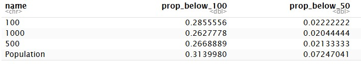

con <- DBI::dbConnect(drv = RPostgres::Postgres(), host = "t2lippgsql03", dbname = "ano_moduler")
pop <- dplyr::tbl(con, dbplyr::in_schema("sampling_frames", "samplingframe_vaatmark_2025")) |>
dplyr::collect()
# helper to get a small subset of the data for testing
small <- function(data = pop) data |> slice_sample(n = 10000)7 Wetland samples
Now we go on to create the actual samples for ANO våtmark (wetlands), using spaceR::nested_balanced_samples.
7.1 Get and prepare sampling frame
First we need to fetch the sampling frame from the database.
This dataset (sampling frame) is 1350918 long. Table 7.1 show just the first ten rows. We have two spreading variables: an easting ost, a northing nord. We also have sampling unit ID’s in ssbid, and two auxiliary variable for balancing: mean_slope and abi. The stratification variable we need to create based on seksjon_kode and sone_kode. We also need to create an area variable based on the sum of r_hav and r_ferskvann.
pop |>
slice_head(n = 10) |>
DT::datatable()pop <- pop |>
rename(Northing = nord,
Easting = ost) |>
mutate(area = 100 - r_hav - r_ferskvann,
stratum = case_when(
seksjon_kode %in% c("6SE-3", "6SE-4", "6SE-5") & sone_kode %in% c("6SO-1", "6SO-2") ~ 1,
seksjon_kode %in% c("6SE-2") & sone_kode %in% c("6SO-1", "6SO-2") ~ 2,
seksjon_kode %in% c("6SE-1") & sone_kode %in% c("6SO-1", "6SO-2") ~ 3,
seksjon_kode %in% c("6SE-1") & sone_kode %in% c("6SO-3", "6SO-4", "6SO-5") ~ 4,
seksjon_kode %in% c("6SE-2") & sone_kode %in% c("6SO-3") ~ 5,
seksjon_kode %in% c("6SE-2") & sone_kode %in% c("6SO-4", "6SO-5") ~ 6,
seksjon_kode %in% c("6SE-3", "6SE-4", "6SE-5") & sone_kode %in% c("6SO-3") ~ 7,
seksjon_kode %in% c("6SE-3", "6SE-4") & sone_kode %in% c("6SO-4", "6SO-5") ~ 8,
seksjon_kode %in% c("6SE-5") & sone_kode %in% c("6SO-4", "6SO-5") ~ 9,
.default = 99
))There is one or a few cases of negative areas. I will just set those tpo be zeros.
# min(pop$area) #negative
# max(pop$area) #OK
pop <- pop |>
mutate(area = case_when(
area < 0 ~ 0,
.default = area
))There is a problem with NAs in the bioclimatic zones and regions:
pop |>
group_by(stratum) |>
summarise(n = n())# A tibble: 10 × 2
stratum n
<dbl> <int>
1 1 137782
2 2 124391
3 3 43099
4 4 45527
5 5 108498
6 6 130314
7 7 136524
8 8 504568
9 9 110879
10 99 9336We have 9336 population units that we don’t know the strata for. Let’s see if there is a pattern to where these units are found. The first check below tells us that stratum 99 is a consequence of NA’s on both the sone and section.
# A tibble: 1 × 1
combo
<chr>
1 NA_NAThen Figure 7.1 tells us that the population units where we lack data on bioclimatic regions are mainly along the coast (a lot of ocean), but also close to freshwater. This is a problem, as it will lead to undersampling of areas close to water. However, we cannot solve this now, and rumors have it that the bioclimatic zone and regions dataset will get updated very soon, so then we can also update (rerun) the sampling pipeline.
The same problem seems to also be for abi, that we have false zero values along the coast or along water. We know this from visual checks, but also from Figure 7.1 where we see that abi is always zero, at the same time that r_bebygd_samf is not.
7.2 Sample
First we subset the columns, and run a test on 10 000 rows.
pop <- pop |>
select(ssbid, Easting, Northing, area, abi, mean_slope, stratum) |>
filter(stratum != 99)
wet_small <- small()testRun <- spaceR::nested_balanced(
samplingFrame = wet_small,
n_seq = seq(50, 20, -10),
id_col = "ssbid",
stratum_col = "stratum",
easting_col = "Easting",
northing_col = "Northing",
area_col = "area",
xbal_formula = ~ abi + mean_slope -1,
exclude_offset = 1e+09,
return_dataframe = TRUE,
out_name = "testSample"
)Sampling with n = 50Sampling with n = 40Sampling with n = 30Sampling with n = 20The test went fine, with no errors.
The returned object testRun which is a list of lists.
names(testRun)[1] "testSample_50" "testSample_40" "testSample_30" "testSample_20"Then we try the same on the entire sampling population
tictoc::tic()
wetlands <- spaceR::nested_balanced(
samplingFrame = pop,
n_seq = seq(1000, 10, -10),
id_col = "ssbid",
stratum_col = "stratum",
easting_col = "Easting",
northing_col = "Northing",
area_col = "area",
xbal_formula = ~ abi + mean_slope -1,
exclude_offset = 1e+09,
return_dataframe = FALSE,
out_name = "wetlands1",
)
tictoc::toc()
# 1012.165 sec elapsed
#saveRDS(wetlands, "data/wetlands.rds")Now I will combine all these lists of lists into something more manageable, like a dataframe.
sample_names <- names(wetlands)
sample_sizes <- gsub("wetlands1_", "", sample_names) |> as.numeric()
all_ids <- wetlands$wetlands1_1000$ID
# Initialize empty matrix with NA
prob_matrix <- matrix(NA_real_, nrow = length(all_ids), ncol = length(sample_names),
dimnames = list(all_ids, sample_sizes))
# Fill in probabilities where IDs occur
for (i in seq_along(wetlands)) {
w <- wetlands[[i]]
id_match <- match(w$ID, all_ids)
prob_matrix[id_match, i] <- w$prob
}
# create column with IDs
prob_matrix <- prob_matrix |>
as.data.frame() |>
rownames_to_column("ssbid") |>
as_tibble()
# append aux data
prob_matrix <- pop |>
right_join(prob_matrix, by = join_by(ssbid))
head(prob_matrix)In the code below I check that the proportion stay stable after the initial pps, and the do. Compared to the full population, we have reduced the proportion of sampling units that have less then 100 or 50% or area by approx. 9 and 71%, respectively.
prob_matrix |>
select(ssbid, area, "1000", "500", "100") |>
pivot_longer(cols = c("1000", "500", "100"),
values_drop_na = TRUE) |>
group_by(name) |>
summarise(prop_below_100 = mean(area < 100, na.rm=T),
prop_below_50 = mean(area < 50, na.rm=T)) |>
rbind(
pop |>
summarise(prop_below_100 = mean(area < 100, na.rm=T),
prop_below_50 = mean(area < 50, na.rm=T)) |>
add_column("name" = "Population", .before = 1)
) |>
kable()
7.3 Evaluate balance
Here we should ideally evaluate the balance of the sample against a simple random sample, for example using BalancedSampling::sb(), but we don’t have time to to this now unfortunately.
7.4 Write to db
7.4.1 Setup sample schema
This part sets up the schema, and is only done ones.
schema_ur <- "CREATE SCHEMA samples"
dbSendQuery(con, schema_ur) Write queries to grant read only access to all.
priv <- "ALTER DEFAULT PRIVILEGES IN SCHEMA samples GRANT SELECT ON TABLES TO ag_pgsql_ano_moduler_ro"
priv2 <- "ALTER DEFAULT PRIVILEGES IN SCHEMA samples GRANT SELECT ON TABLES TO ag_pgsql_ano_moduler_rw"
priv3 <- "ALTER DEFAULT PRIVILEGES IN SCHEMA samples GRANT SELECT ON TABLES TO ag_pgsql_ano_moduler_admin"
priv4 <- "GRANT USAGE ON SCHEMA samples TO ag_pgsql_ano_moduler_admin"
priv5 <- "GRANT USAGE ON SCHEMA samples TO ag_pgsql_ano_moduler_rw"
priv6 <- "GRANT USAGE ON SCHEMA samples TO ag_pgsql_ano_moduler_ro"
dbSendStatement(con, priv)
dbSendStatement(con, priv2)
dbSendStatement(con, priv3)
dbSendStatement(con, priv4)
dbSendStatement(con, priv5)
dbSendStatement(con, priv6)7.4.2 Prepare and export
myIDs <- uuid::UUIDgenerate(n = nrow(prob_matrix))
wetlands_db <- prob_matrix |>
mutate(wetlands_sample_unit_id = myIDs,
.after = 1) |>
select(-Easting, -Northing, -area, -abi, -mean_slope, -stratum)
write_csv(wetlands_db, "data/wetland_samples_1000.csv")Code
q1 <- 'create table samples.vaatmark_2025 (
wetlands_sample_unit_ID varchar(50) PRIMARY KEY,
ssbid varchar(50),
"1000" numeric(24,23),
"990" numeric(24,23),
"980" numeric(24,23),
"970" numeric(24,23),
"960" numeric(24,23),
"950" numeric(24,23),
"940" numeric(24,23),
"930" numeric(24,23),
"920" numeric(24,23),
"910" numeric(24,23),
"900" numeric(24,23),
"890" numeric(24,23),
"880" numeric(24,23),
"870" numeric(24,23),
"860" numeric(24,23),
"850" numeric(24,23),
"840" numeric(24,23),
"830" numeric(24,23),
"820" numeric(24,23),
"810" numeric(24,23),
"800" numeric(24,23),
"790" numeric(24,23),
"780" numeric(24,23),
"770" numeric(24,23),
"760" numeric(24,23),
"750" numeric(24,23),
"740" numeric(24,23),
"730" numeric(24,23),
"720" numeric(24,23),
"710" numeric(24,23),
"700" numeric(24,23),
"690" numeric(24,23),
"680" numeric(24,23),
"670" numeric(24,23),
"660" numeric(24,23),
"650" numeric(24,23),
"640" numeric(24,23),
"630" numeric(24,23),
"620" numeric(24,23),
"610" numeric(24,23),
"600" numeric(24,23),
"590" numeric(24,23),
"580" numeric(24,23),
"570" numeric(24,23),
"560" numeric(24,23),
"550" numeric(24,23),
"540" numeric(24,23),
"530" numeric(24,23),
"520" numeric(24,23),
"510" numeric(24,23),
"500" numeric(24,23),
"490" numeric(24,23),
"480" numeric(24,23),
"470" numeric(24,23),
"460" numeric(24,23),
"450" numeric(24,23),
"440" numeric(24,23),
"430" numeric(24,23),
"420" numeric(24,23),
"410" numeric(24,23),
"400" numeric(24,23),
"390" numeric(24,23),
"380" numeric(24,23),
"370" numeric(24,23),
"360" numeric(24,23),
"350" numeric(24,23),
"340" numeric(24,23),
"330" numeric(24,23),
"320" numeric(24,23),
"310" numeric(24,23),
"300" numeric(24,23),
"290" numeric(24,23),
"280" numeric(24,23),
"270" numeric(24,23),
"260" numeric(24,23),
"250" numeric(24,23),
"240" numeric(24,23),
"230" numeric(24,23),
"220" numeric(24,23),
"210" numeric(24,23),
"200" numeric(24,23),
"190" numeric(24,23),
"180" numeric(24,23),
"170" numeric(24,23),
"160" numeric(24,23),
"150" numeric(24,23),
"140" numeric(24,23),
"130" numeric(24,23),
"120" numeric(24,23),
"110" numeric(24,23),
"100" numeric(24,23),
"90" numeric(24,23),
"80" numeric(24,23),
"70" numeric(24,23),
"60" numeric(24,23),
"50" numeric(24,23),
"40" numeric(24,23),
"30" numeric(24,23),
"20" numeric(24,23),
"10" numeric(24,23),
CONSTRAINT fk_vaatmark_ssbid
FOREIGN KEY (ssbid)
REFERENCES ssb_grids.ssb_500 (ssbid)
DEFERRABLE INITIALLY DEFERRED
);'# indices makes the database work faster. It should be added to all tables that are looked up frequently
q2 <- "create index on samples.vaatmark_2025 using btree(ssbid);"
q3 <- "create index on samples.vaatmark_2025 using btree(wetlands_sample_unit_ID);"# sending the queries:
dbSendStatement(con, q1)
dbSendStatement(con, q2)
dbSendStatement(con, q3)write_sf(wetlands_db, dsn = con,
layer = Id(schema = "samples", table = "vaatmark_2025"),
append = T)Testing that the data is there:
dplyr::tbl(con, dbplyr::in_schema("samples", "vaatmark_2025")) |>
#dplyr::slice(n = 8) |>
select(ssbid, "1000", "500", "100")# Source: SQL [?? x 4]
# Database: postgres [anders.kolstad@t2lippgsql03:5432/ano_moduler]
ssbid `1000` `500` `100`
<chr> <dbl> <dbl> <dbl>
1 22965006533500 0.00738 NA NA
2 22970006542500 0.00819 0.00410 0.000819
3 22975006545000 0.00819 NA NA
4 22745006548500 0.00788 0.00394 0.000788
5 22960006554500 0.00819 NA NA
6 22635006555000 0.00329 0.00165 NA
7 22675006557500 0.00362 0.00181 NA
8 22845006558500 0.00819 NA NA
9 22985006559000 0.00799 0.00400 NA
10 22895006677000 0.00819 NA NA
# ℹ more rows